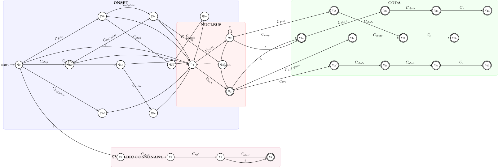

We’ll start with an application of FSAs to modeling licit English syllables. To get a sense for what FSAs look like, let’s consider the following example, which aims to model possible English syllables:

The symbols along the arrow represent collections of symbols.
Class Symbol
IPA Symbols
Description
Cstop
[p, b, t, d, k, g]
Stop consonants/plosives
Cfric
[f, v, θ, ð, s, z, ʃ, ʒ, h]
Fricatives
Caffr/nas
[tʃ, dʒ, m, n, ŋ]
Affricates and nasals
Cliq/glide
[l, r, w, j]
Liquids and glides
Cliq
[l, r]
Liquids only
Cglide
[w, j]
Glides only
Cobstr
[t, d, s, z, θ, ð]
Obstruents in coda clusters
Cs
[s]
Just /s/, common in complex codas
Csyl
[n̩, m̩, l̩, r̩]
Syllabic consonants
Class Symbol
IPA Symbols
Description
Vfront
[i, ɪ, e, ɛ, æ, a]
Front vowels
Vback
[ɑ, ɔ, o, ʊ, u, ʌ, ə, ɝ]
Back vowels
Vglide
[ɪ, ʊ]
Vowels that can form glides in diphthongs
There’s a few components to notice here:
The circles represent the states of the finite state automaton. As you might expect, there are a finite number of them.
The arrows represent the transitions between states.
The labels on the arrows are the labels of the transitions, which always come from some alphabet \(\Sigma\) (just like in regular expressions).
There are two kinds of special states:
The initial state, which is the one that the automaton starts in.
The final states, which are the ones that the automaton can (but need not) end in.
The way we can tell whether an FSA generates a string is by starting at the initial state and following the transitions, choosing one symbol on each transition and collecting them to form a string. We’re allowed to (but need not) stop when we hit a final state. As long as we stop in a final state, the string we’ve built is generated by the automaton.
Source Code
---title: Overviewbibliography: ../../references.bibfilters: - diagramdiagram: engine: tikz: execpath: lualatex header-includes: - '\usetikzlibrary{automata, positioning, arrows, decorations.pathreplacing, fit, backgrounds, calc, shapes.multipart}'---We'll start with an application of FSAs to modeling licit English syllables. To get a sense for what FSAs look like, let's consider the following example, which aims to model possible English syllables:```tikz%%| filename=english-syllables\begin{tikzpicture}[ > = stealth, shorten > = 1pt, auto, node distance = 4cm, semithick, every state/.style = { draw = black, thick, fill = white, minimum size = 4mm }, scale=0.9, transform shape]% ONSET SECTION - MADE MUCH TALLER\node[state, initial] (q0) {$q_0$};% Single consonant onset states - increased vertical spacing\node[state, right=of q0] (q1a) {$q_{1a}$};\node[state, above right=4cm and 2.5cm of q1a] (q1b) {$q_{1b}$};\node[state, right=of q1a] (q1c) {$q_{1c}$};\node[state, below right=4cm and 2.5cm of q1a] (q1d) {$q_{1d}$};% Two-consonant onset cluster states\node[state, right=of q1b] (q2a) {$q_{2a}$};\node[state, right=of q1c] (q2b) {$q_{2b}$};\node[state, right=of q1d] (q2c) {$q_{2c}$};% Three-consonant onset cluster states\node[state, right=of q2a] (q3a) {$q_{3a}$};\node[state, right=of q2b] (q3b) {$q_{3b}$};% NUCLEUS SECTION - ALSO INCREASED HEIGHT\node[state, right=6cm of q1c] (n1) {$n_1$};\node[state, above right=2cm and 3cm of n1] (n2) {$n_2$};\node[state, below right=2cm and 3cm of n1] (n3) {$n_3$};% CODA SECTION\node[state, right=6cm of n2] (c1a) {$c_{1a}$};\node[state, above right=2cm and 2.5cm of c1a] (c1b) {$c_{1b}$};\node[state, right=of c1a] (c1c) {$c_{1c}$};\node[state, below right=2cm and 2.5cm of c1a] (c1d) {$c_{1d}$};% Two-consonant coda cluster states\node[state, right=of c1b] (c2a) {$c_{2a}$};\node[state, right=of c1c] (c2b) {$c_{2b}$};\node[state, right=of c1d] (c2c) {$c_{2c}$};% Three-consonant coda cluster states\node[state, right=of c2a] (c3a) {$c_{3a}$};\node[state, accepting, right=of c2b] (c3b) {$c_{3b}$};\node[state, right=of c2c] (c3c) {$c_{3c}$};% Four-consonant coda cluster states (rare but exist)\node[state, accepting, right=of c3a] (c4a) {$c_{4a}$};\node[state, accepting, right=of c3c] (c4b) {$c_{4b}$};% SYLLABIC CONSONANT SECTION - MOVED FURTHER DOWN\node[state, below=8cm of q1c] (s1) {$s_1$};\node[state, right=of s1] (s2) {$s_2$};\node[state, right=of s2] (s3) {$s_3$};\node[state, accepting, right=of s3] (s4) {$s_4$};% Make all states accepting that can end a syllable\node[state, accepting] at (n3) {$n_3$};\node[state, accepting] at (c1a) {$c_{1a}$};\node[state, accepting] at (c1b) {$c_{1b}$};\node[state, accepting] at (c1c) {$c_{1c}$};\node[state, accepting] at (c1d) {$c_{1d}$};\node[state, accepting] at (c2a) {$c_{2a}$};\node[state, accepting] at (c2b) {$c_{2b}$};\node[state, accepting] at (c2c) {$c_{2c}$};\node[state, accepting] at (c3a) {$c_{3a}$};\node[state, accepting] at (c3c) {$c_{3c}$};% ONSET TRANSITIONS% Single consonant onset\path[->] (q0) edge node[above, align=center] {$C_{stop}$} (q1a);\path[->] (q0) edge node[above, sloped, align=center] {$C_{fric}$} (q1b);\path[->] (q0) edge node[above, align=center] {$C_{affr/nas}$} (q1c);\path[->] (q0) edge node[below, sloped, align=center] {$C_{liq/glide}$} (q1d);% Legal two-consonant onsets\path[->] (q1a) edge node[above, sloped, align=center] {$C_{liq/glide}$} (q2a);\path[->] (q1b) edge[bend left] node[above, sloped, align=center] {$C_{liq/glide}$} (q2a);\path[->] (q1b) edge node[above, align=center] {$C_{stop}$} (q2b);\path[->] (q1c) edge node[above, align=center] {$C_{glide}$} (q2c);% Legal three-consonant onsets\path[->] (q2b) edge node[above, align=center] {$C_{liq/glide}$} (q3a);\path[->] (q2a) edge node[above, sloped, align=center] {$C_{glide}$} (q3b);% Connect all onset possibilities to nucleus\path[->] (q0) edge[bend left=20] node[above, sloped, align=center] {$\varepsilon$} (n1);\path[->] (q1a) edge[bend left=15] node[above, sloped, align=center] {} (n1);\path[->] (q1b) edge[bend left=25] node[above, sloped, align=center] {} (n1);\path[->] (q1c) edge[bend left=5] node[above, sloped, align=center] {} (n1);\path[->] (q1d) edge[bend right=20] node[above, sloped, align=center] {} (n1);\path[->] (q2a) edge[bend left=10] node[above, sloped, align=center] {} (n1);\path[->] (q2b) edge[bend left=5] node[above, sloped, align=center] {} (n1);\path[->] (q2c) edge[bend right=10] node[above, sloped, align=center] {} (n1);\path[->] (q3a) edge[bend left=5] node[above, sloped, align=center] {} (n1);\path[->] (q3b) edge[bend right=5] node[above, sloped, align=center] {} (n1);% NUCLEUS TRANSITIONS\path[->] (n1) edge node[above, sloped, align=center] {$V_{front}$} (n2);\path[->] (n1) edge node[below, sloped, align=center] {$V_{back}$} (n3);\path[->] (n2) edge[bend right=30] node[right, align=center] {$V_{glide}$} (n3);\path[->] (n2) edge[loop above] node[above, align=center] {$\varepsilon$} (n2);% Connect nucleus to coda or end\path[->] (n2) edge[bend right=30] node[above, align=center] {$\varepsilon$} (c1a);\path[->] (n3) edge[bend left=20] node[below, sloped, align=center] {$\varepsilon$} (c1a);% CODA TRANSITIONS% Single consonant coda\path[->] (n2) edge node[above, sloped, align=center] {$C_{stop}$} (c1a);\path[->] (n2) edge node[above, sloped, align=center] {$C_{fric}$} (c1b);\path[->] (n3) edge node[below, sloped, align=center] {$C_{affr/nas}$} (c1c);\path[->] (n3) edge node[below, sloped, align=center] {$C_{liq}$} (c1d);% Legal two-consonant codas\path[->] (c1a) edge node[above, sloped, align=center] {$C_{obstr}$} (c2a);\path[->] (c1b) edge node[above, align=center] {$C_{obstr}$} (c2b);\path[->] (c1c) edge node[above, align=center] {$C_{obstr}$} (c2b);\path[->] (c1d) edge node[above, align=center] {$C_{obstr}$} (c2c);% Legal three-consonant codas\path[->] (c2a) edge node[above, align=center] {$C_{obstr}$} (c3a);\path[->] (c2b) edge node[above, align=center] {$C_{s}$} (c3b);\path[->] (c2c) edge node[above, align=center] {$C_{obstr}$} (c3c);% Legal four-consonant codas (rare)\path[->] (c3a) edge node[above, align=center] {$C_{s}$} (c4a);\path[->] (c3c) edge node[above, align=center] {$C_{s}$} (c4b);% SYLLABIC CONSONANT PATH\path[->] (q0) edge[bend right=30] node[left, align=center] {$\varepsilon$} (s1);\path[->] (s1) edge node[above, align=center] {$C_{obstr}$} (s2);\path[->] (s2) edge node[above, align=center] {$C_{syl}$} (s3);\path[->] (s3) edge node[above, align=center] {$C_{obstr}$} (s4);\path[->] (s3) edge[bend right=20] node[above, align=center] {$\varepsilon$} (s4);% ANNOTATIONS AND GROUPING% Highlight different sections\begin{pgfonlayer}{background} % Onset section \node[fit=(q0) (q1a) (q1b) (q1c) (q1d) (q2a) (q2b) (q2c) (q3a) (q3b), draw=blue!30, fill=blue!5, rounded corners, inner sep=1cm, label={[anchor=north,font=\bfseries]north:ONSET}] (onset) {}; % Nucleus section \node[fit=(n1) (n2) (n3), draw=red!30, fill=red!5, rounded corners, inner sep=1cm, label={[anchor=north,font=\bfseries]north:NUCLEUS}] (nucleus) {}; % Coda section \node[fit=(c1a) (c1b) (c1c) (c1d) (c2a) (c2b) (c2c) (c3a) (c3b) (c3c) (c4a) (c4b), draw=green!30, fill=green!5, rounded corners, inner sep=0.5cm, label={[anchor=north,font=\bfseries]north:CODA}] (coda) {}; % Syllabic consonant section \node[fit=(s1) (s2) (s3) (s4), draw=purple!30, fill=purple!5, rounded corners, inner sep=0.5cm, label={[anchor=west,font=\bfseries]west:SYLLABIC CONSONANT}] (syllabic) {};\end{pgfonlayer}\end{tikzpicture}```The symbols along the arrow represent collections of symbols.| Class Symbol | IPA Symbols | Description ||--------------|-------------|-------------|| C<sub>stop</sub> | [p, b, t, d, k, g] | Stop consonants/plosives || C<sub>fric</sub> | [f, v, θ, ð, s, z, ʃ, ʒ, h] | Fricatives || C<sub>affr/nas</sub> | [tʃ, dʒ, m, n, ŋ] | Affricates and nasals || C<sub>liq/glide</sub> | [l, r, w, j] | Liquids and glides || C<sub>liq</sub> | [l, r] | Liquids only || C<sub>glide</sub> | [w, j] | Glides only || C<sub>obstr</sub> | [t, d, s, z, θ, ð] | Obstruents in coda clusters || C<sub>s</sub> | [s] | Just /s/, common in complex codas || C<sub>syl</sub> | [n̩, m̩, l̩, r̩] | Syllabic consonants || Class Symbol | IPA Symbols | Description ||--------------|-------------|-------------|| V<sub>front</sub> | [i, ɪ, e, ɛ, æ, a] | Front vowels || V<sub>back</sub> | [ɑ, ɔ, o, ʊ, u, ʌ, ə, ɝ] | Back vowels || V<sub>glide</sub> | [ɪ, ʊ] | Vowels that can form glides in diphthongs |There's a few components to notice here:1. The circles represent the *states* of the finite *state* automaton. As you might expect, there are a finite number of them.2. The arrows represent the *transitions* between states.3. The labels on the arrows are the *labels* of the transitions, which always come from some alphabet $\Sigma$ (just like in regular expressions).4. There are two kinds of special states: - The *initial state*, which is the one that the automaton starts in. - The *final states*, which are the ones that the automaton can (but need not) end in.The way we can tell whether an FSA generates a string is by starting at the initial state and following the transitions, choosing one symbol on each transition and collecting them to form a string. We're allowed to (but need not) stop when we hit a final state. As long as we stop in a final state, the string we've built is generated by the automaton.